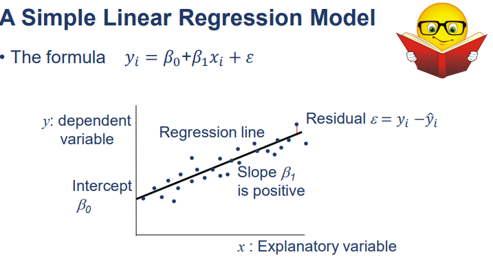
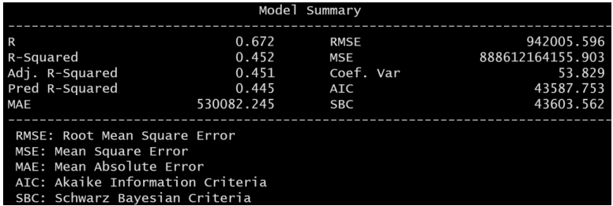
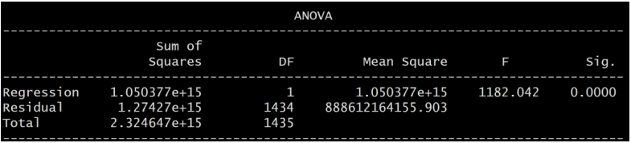
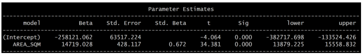
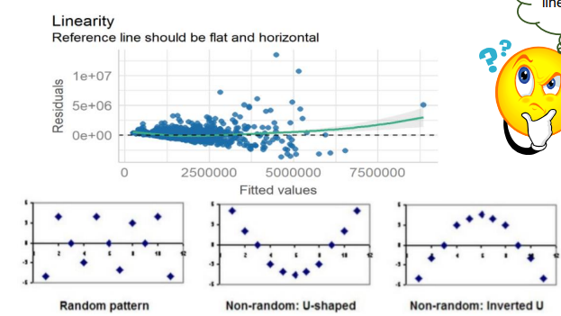
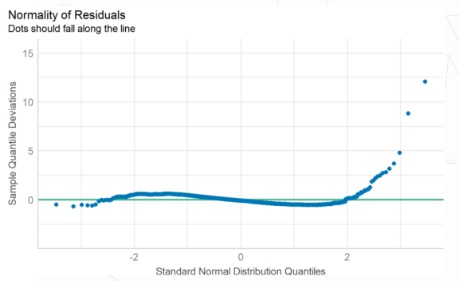
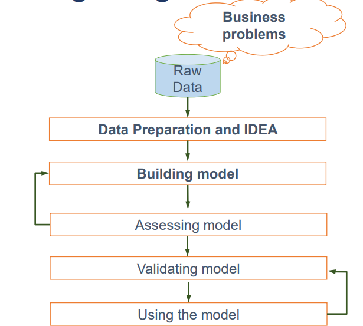
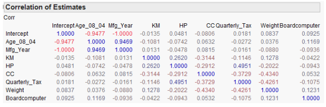

Notes 10 -Linear Regression
Linear Regression
Note (condo resale price example)
Independent variable: floor area, proximity
Dependent variable: price
Linear Regression Model + Residual

*Not all points will fit nicely on the regression model
residual -> Random Error Term (diff between predicted value point VS observed point
R square (coefficient of determination)
higher better = better model fit (more variation in y is explained by variation in x)
between 0 and 1

R-Squared of 0.452 -> floor area can account for 45.2% of the variation in the resale price [in another word, 4.8% cannot be explained, so there must be other variables that have an influence also]
Adjusted R-square (can ne negative, usually not, is always lower than R-sqaured)
if have > 1 independent variable
a modified R-square adjusted for the no. of explanatory variables in the model
(Adj. R-square increases -> if new term improves the model more than would be expected by chance.
Adj. R-square decreases -> if new predictor improves the model by less than expected by chance)
F test (Analysis of variance)
see if the variation explained by the models is not due to chance
Good model -> large F-ratio (>= 1)

F-ratio of 1182.042 -> is significant at p < 0.0001 [there are <0.01% chance that an F-ratio this large will happen if null hypo is true]
[hence, our regression model result is significantly better explanatory model VS using mean value of re-sale prices] -> the regression model overall estimates resale prices significantly well
T test
Good parameter should have a large t-value (>= 1)

Beta (B0) intercept of -258121.062 -> when there is no info on floor area (when X=0), the model estimate the resale price at $258,121.062 Beta (B1) -> gradient of the regression line. (+14719.028 = relationship is positive) [if our predictor variable increase by 1 unit, the model predicts the price to increase by 14719.028 unit]
Both t ratio are signficant at p <0.0001 -> can conclude floor area makes a significant contribution to predicting resale price
Correlation != Causation
can tell if the relationship between response variable & explanatory variables is statistically significant
how much variance in the response is accounted for by the explanatory variables
which explanatory vairables are relatively impt explanatory variables of the response
Our Assumption on linear regression
relationship between dependent & independent is linear
expected mean error of regression model = 0
residuals do not vary with x (constant variance)
residuals uncorrelated with each other (as with time series)
Linearity assumption
if fit a linear model to data which are nonlinearly related -> prediction will have serious error
To verify, it should be very close the the line

Normality Assumption
mean that residuals are normally distributed & hve 0 population mean
*Independent variable do not need to be normally distributed

Is normally distributed since mean is very close to 0
All the above is only 1 independent + 1 dependent variable. Now, we will do multiple independent to 1 dependent variable
Model Building using Multiple Linear Regression Process

Data Required
Scale type of the dependent variable
Variables need to vary
Sample size (>100 observations, preferably 200, more = reliable)
Collinearity (Usage of Variance Inflation Factors)
exist where >= 2 explanatory variables are moderately/highly correlated
2 types:
Structural Multicollinearity
Data-based multicollinearity
detect by scanning correlation matrix of all explanatory variables (if any correlate very highly >0.8)

Age & Manufacturing Year highly correlated at 0.9469, hence is safe to drop 1 in subsequent analysis
Multiple Linear Regression
will use least square method (a.k.a Ordinary Least Square) too to find best fit linear regression line